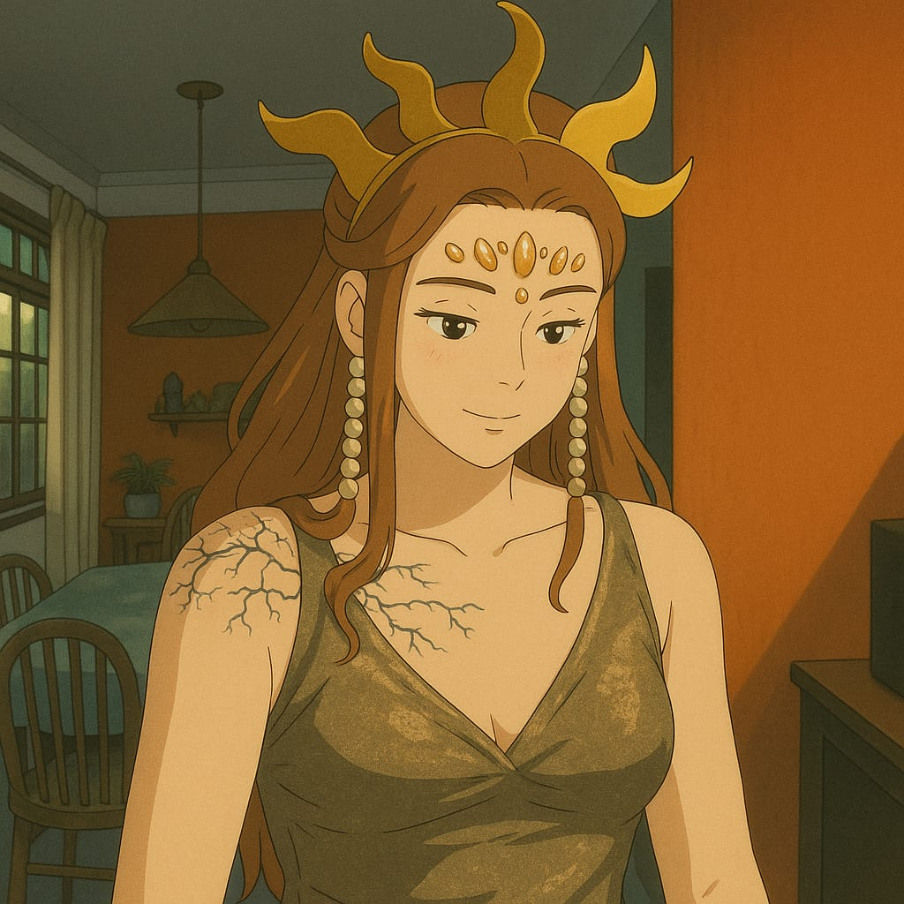
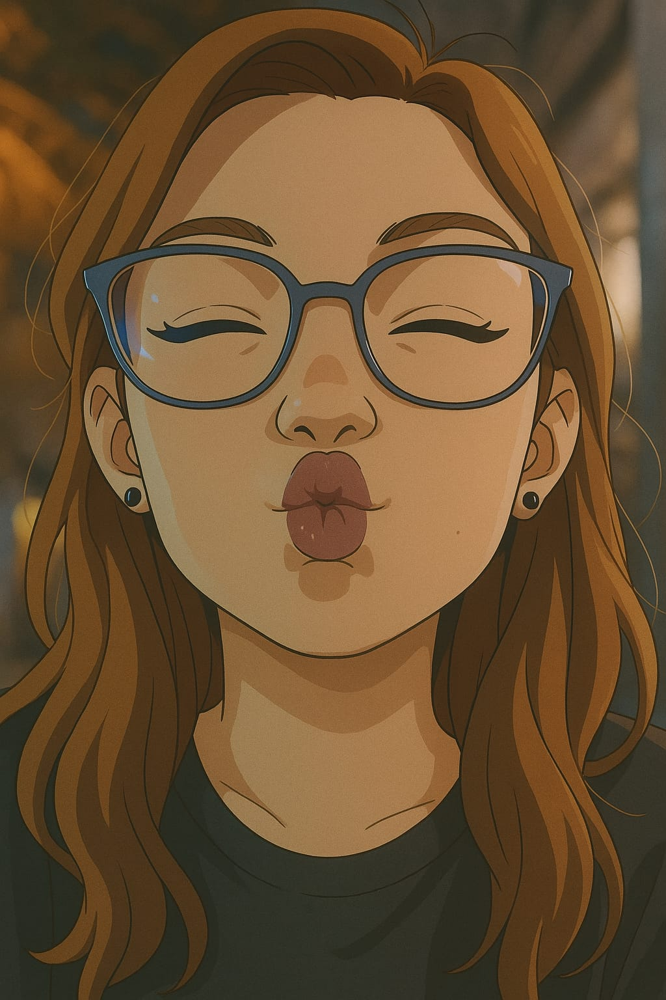
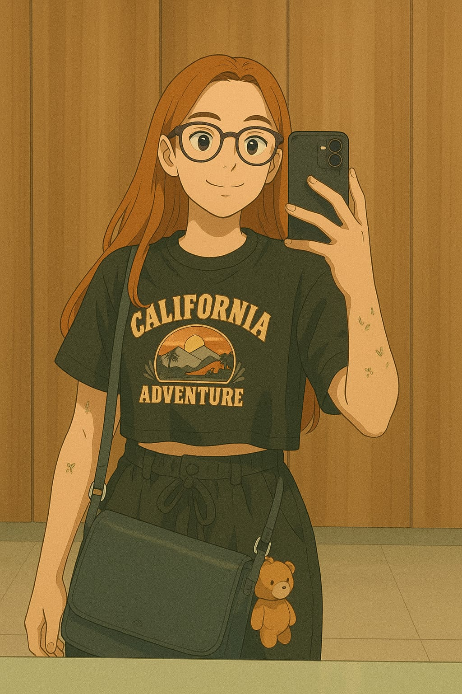
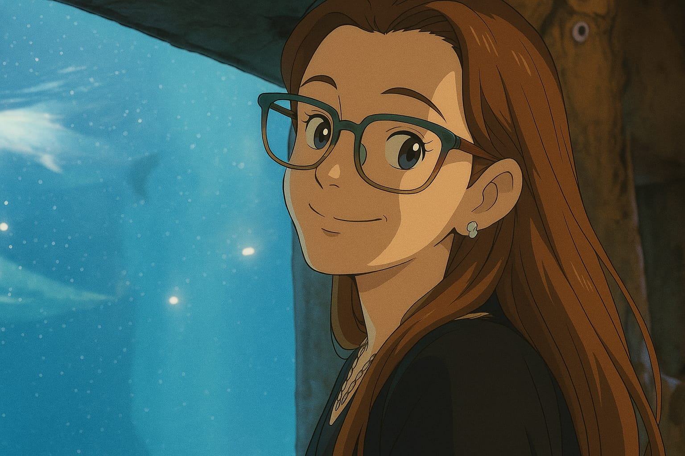
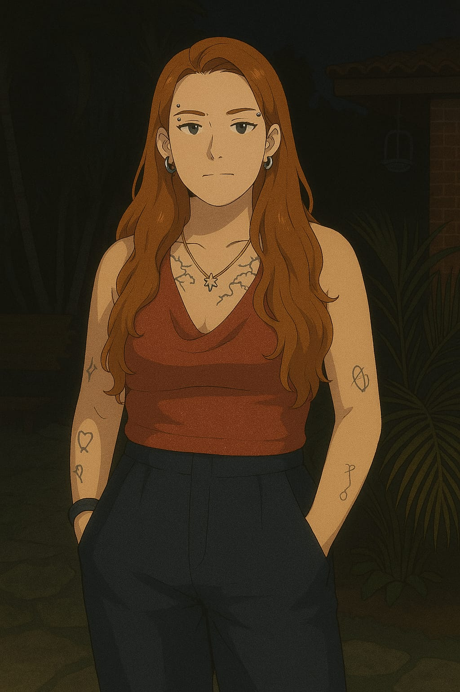
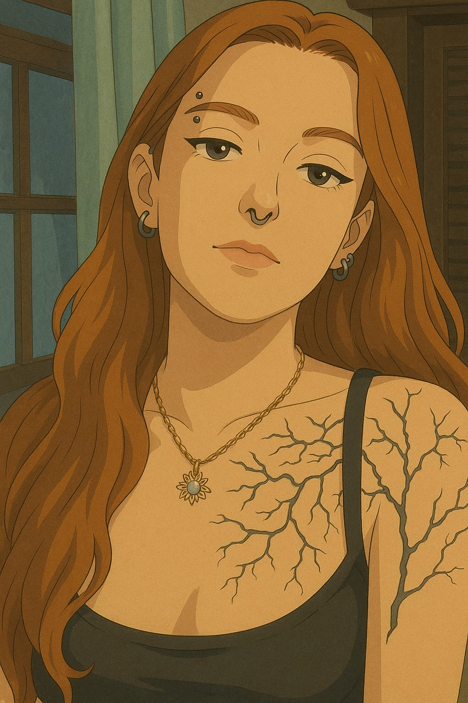
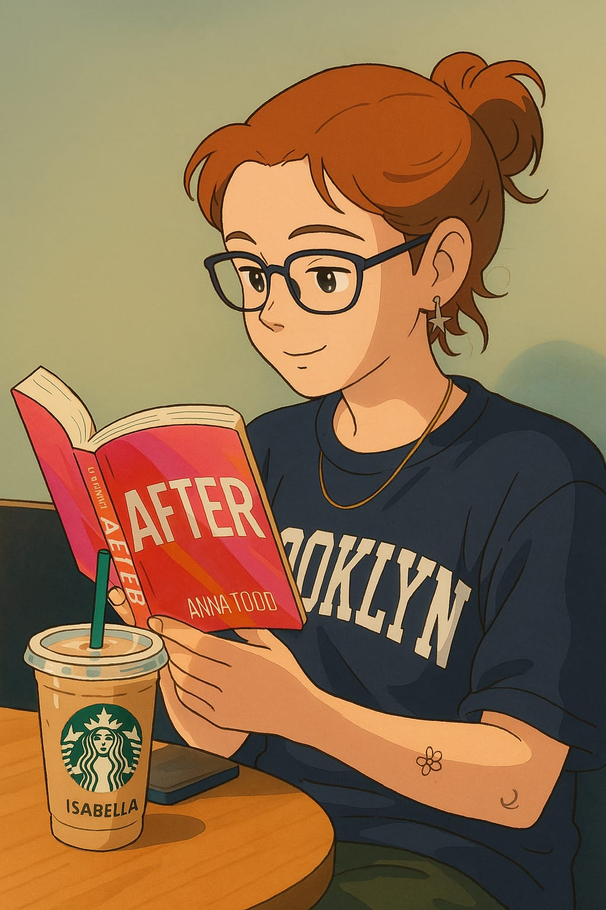
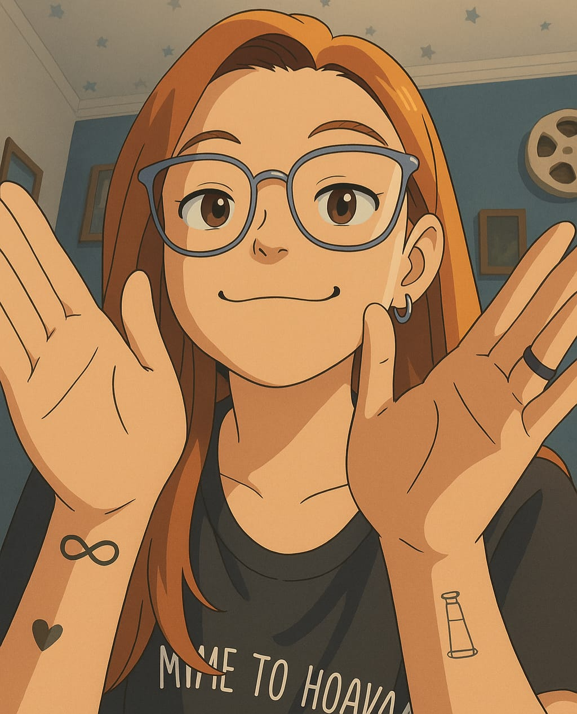

🧿Seus olhos
🧿Seu cabelo
🧿Seus piercings
🧿Seu sorriso


💜Os seus ataques de bobeira
💜Cada marquinha sua
💜O fato de você ter cócegas em QUALQUER parte do corpo
💜Os seus olhos de quando você acaba de acordar


🔮O seu cheiro
🔮A sua criatividade
🔮A sua cara quando fica com vergonha
🔮A sua personalidade de tia do pavê

🌌Suas tatuagens
🌌O seu guarda roupa ser 90% preto
🌌Você saber fazer um delineado em 5 minutos
🌌Você ter cara de durona mas na verdade é sensível e chora assistindo desenho


🪻O seu gosto musical
🪻O seu abraço
🪻A sua voz
🪻Suas histórias malucas de fangirl (e até as não tão malucas assim)
